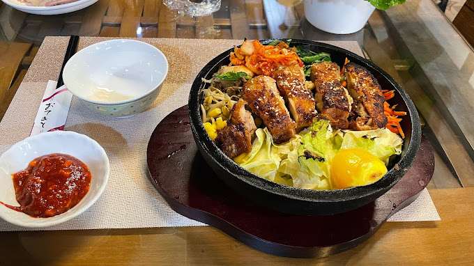

| 香姨熱炒|阿宏の家|斐園茶莊 |
飲料有無糖紅茶和果汁，說實話，這樣的自助吧在平地很常見，甚至你會覺得很簡單。菜單就是牆上的小黑板，很簡單只有4種火鍋加韓式鍋巴飯：清燉大骨鍋、蒜香牛奶鍋、麻油雞鍋、柴魚昆布鍋，火鍋通通500元，韓式雞腿鍋巴飯380元，加肉盤130元。阿里山的火鍋很不一樣，菜盤裡都是原形食物沒有火鍋料那種加工食物，超過15種滿滿的蔬菜 |
 |
斐園茶莊 |
|
在北緯23.5度之下孕育出的台灣在地好茶，讓世界看見台灣，看見阿里山。以阿里山稀有的茶葉品種–四季烏龍茶製成的阿里山紅茶，有特殊的甜香風味，茶包為天然玉米鬚製成，不含塑化劑充氮保鮮。斐園深耕嘉義17年，以優質的好茶及時尚簡約包裝深植人心，此款伴手禮以斐園LOGO為主軸，設計出簡約時尚風格，斐園就是優質茶葉的代表。 資料來源:斐園茶莊top |
.jpeg) |